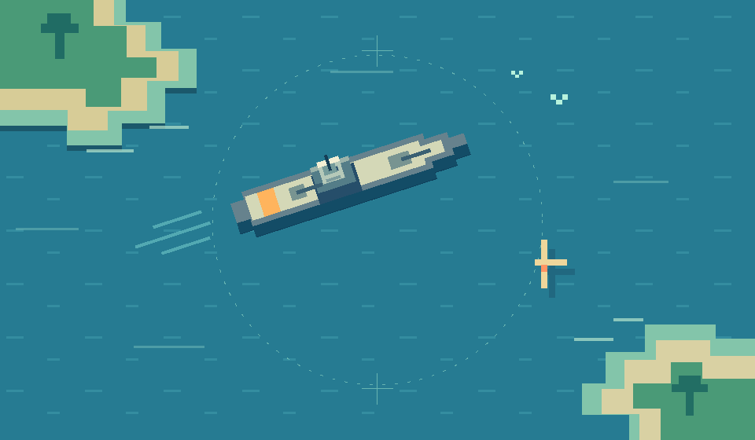

ÁREA DE OPERAÇÕES
0 / 5 NAVIOSPrepare sua frota
SETOR ALFA10 × 10
SEU ESTALEIRO
05Arraste. Encaixe. Navegue.
Arraste um navio para o oceano ou toque nele e depois na grade.
Você pode mover e girar os navios até confirmar.Uma frota secreta. Um rival do outro lado.
O próximo disparo é seu.

Entre a bordo. Seu adversário pode estar
no sofá ao lado ou do outro lado do mundo.
Arraste um navio para o oceano ou toque nele e depois na grade.
Você pode mover e girar os navios até confirmar.O silêncio antes da primeira onda.
O oceano sempre guarda uma próxima batalha.